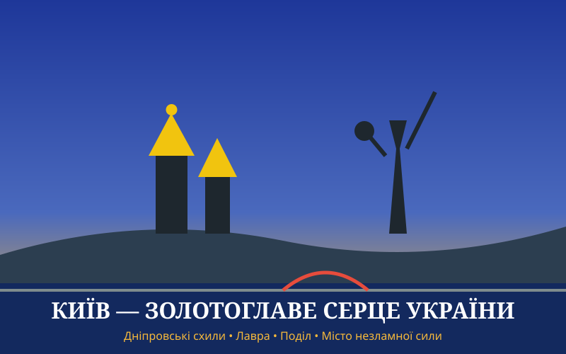

Загальна характеристика

Київ — столиця України з понад півторатисячолітньою історією. Місто контрастів, де велична княжа спадщина переплітається з енергійним життям сучасної європейської метрополії.
Чому це місто особливе
Київ заряджає своєю незламною енергією: просторі панорами Дніпра з Володимирської гірки, затишні дворики Подолу та бурхливий ритм Хрещатика ніколи не набридають.
Цікаві факти
- Станція метро «Арсенальна» — одна з найглибших у світі (глибина 105,5 метрів).
- Хрещатик — одна з найкоротших (близько 1,3 км), але водночас найширших головних вулиць європейських столиць.
- Київ справедливо вважається однією з найзеленіших європейських столиць завдяки безлічі парків і островів на Дніпрі.
Визначні місця
- Софійський собор та Михайлівський Золотоверхий монастир.
- Андріївський узвіз та Поділ.
- Києво-Печерська лавра.
- Пейзажна алея та Володимирська гірка.
- Золоті Ворота.
Особиста оцінка
Оцінка: 9.8 / 10 (Місто сили, масштабу та свободи).
Додаткова інформація
Ознайомитися з офіційним порталом столиці: Офіційний портал Києва (КМДА).